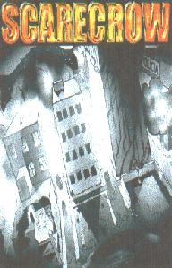

- 9 músicas (20 min) -
|
|

|
| 1. seriedade e corrupção no país da diversão |
3:02 |
| 2. desavenças |
2:02 |
| 3. agressivo |
1:28 |
| 4. pesadelos sociais |
2:05 |
| 5. favela |
3:08 |
| 6. tomado pela raiva |
1:47 |
| 7. ralé |
2:20 |
| 8. parasitas |
3:16 |
| 9. skarecrow |
0:46 |
|
características:
| qualidade de gravação |
adesivo |
letras das músicas |
|
boa
|
não
|
sim
|
| cidade : |
curitiba - PR - Brasil |
| 1º ensaio : |
out96 |
| gravação : |
out98 |
| cantam em : |
português |
| influências : |
pennywise, bad religion, millencolin |
|
| integrantes: |
baixo |
- |
guilherme |
| |
batera |
- |
valter |
| |
guitarra |
- |
júnior |
| |
vocal |
- |
thiago |
|
comentários:
"
esses caras estão já na sua terceira demo, sendo cada uma com um som
diferente da outra, mas dessa vez se definiram, sendo bem notável o
amadurecimento da banda. o som está mais rápido do que nunca, com as
já tradicionais partes mais lentas e pesadas intercalando. as letras
são todas em português, expressando a opinião dos integrantes sobre
as coisas do cotidiano. destaques para a gravação bem feita e para a
capinha colorida e com fotos.
"